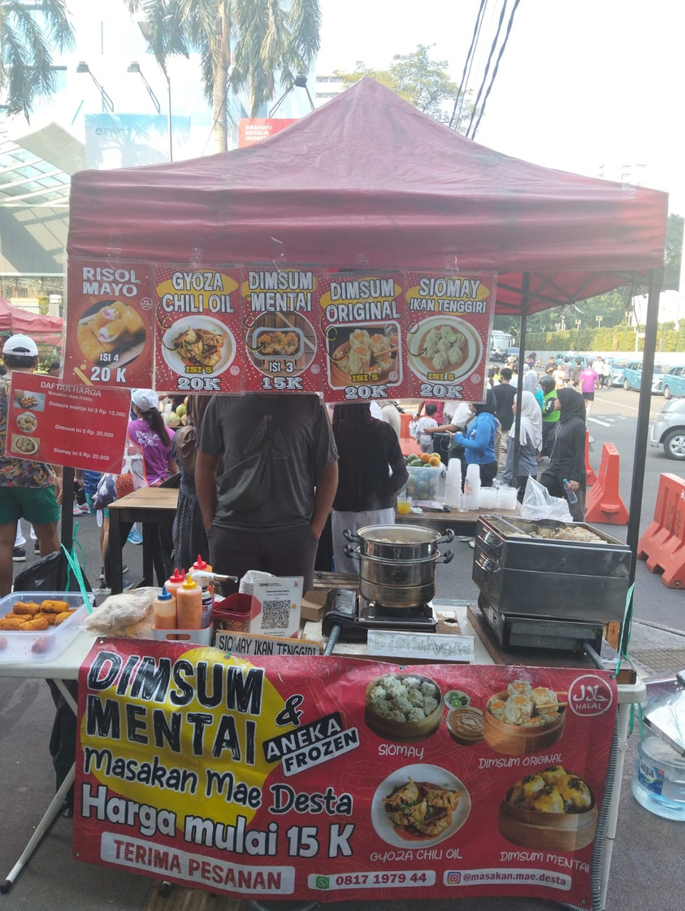

2022 – Sekarang
Pengelola Operasional — Usaha Keluarga (Kuliner)
- Terlibat dalam operasional harian bisnis kuliner keluarga sejak 2022.
- Berjualan di berbagai bazar, termasuk GBK, hingga kini mengelola cabang toko kontainer di Pulomas.
- Menangani logistik, operasional toko, dan penjualan langsung kepada pelanggan.
Dari sinilah saya terbiasa membaca kebutuhan pelanggan secara langsung, lalu menerjemahkannya menjadi keputusan desain yang praktis.